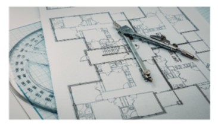
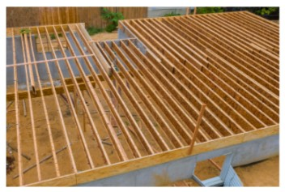
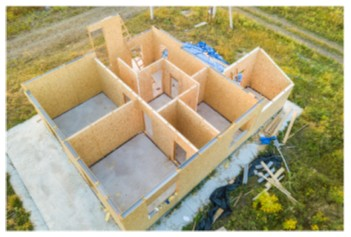
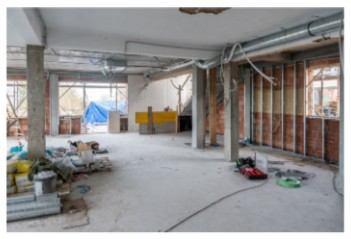
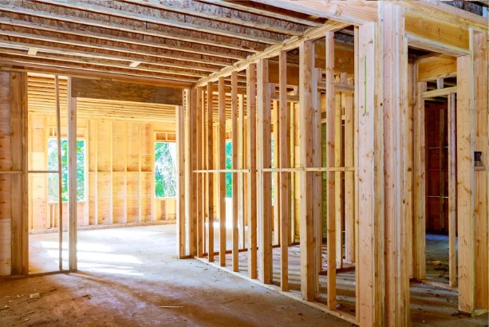
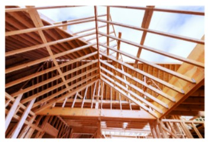
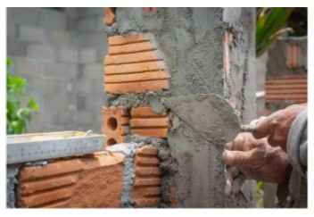
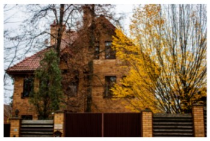

The Journey: From Foundations to Frameworks
The journey from foundation to framework reflects how my understanding of teaching has developed over time. The experiences and perspectives outlined here have shaped how I see learning, but they have also pushed me to make intentional decisions about how I teach. As these ideas were tested in practice, they began to form a more structured approach to supporting learners. The timeline below highlights key moments in this process, showing how my foundation has grown into a framework that guides my work today.
First Web Projects
Took first HTML class and discovered an interest. Built my first website on the GeoCities site.

Community Service
A team running for district executive invited me to be District Reporter/Webmaster. We were elected, I began learning how to use FrontPage and built the district website, which was a critical resource for communication.
Call Center Support & Training Assistant
Started working at a call center... Rebuild the Online reference guide... selected to travel to India to help with a project transition, providing critical training support and operational assistance during a period of global expansion.


Public Service & Digital Stewardship
Joined the CRA’s NL Call Site. Maintained online reference guides and transitioned into a "Digital Ninja" role within Taxpayer Requested Review and the compliance T1 Review Processing teams.
Re-evaluating the Blueprint
Following a significant car accident... subsequent diagnoses of PTSD, Depression, and GAD... This led to the decision to return to school for a Programmer Analyst diploma.


CNA Programmer Analyst & STEM Identity
Navigated a male-dominated STEM program at CNA, graduating as the only woman in the class. Secured prestigious work terms and the Dean’s List for 7 out of 8 semesters.
C-CORE: Programming, Database Design & Training
Served as a Programmer Analyst for C-CORE. Included developing database solutions, finding software to improve organizational efficiency, and delivered training/support to engineers and scientists.


BTech Journey & Second Stress Test
Began a Bachelor of Technology through NAIT. Faced a second car accident... resulting injuries required a move away from sustainable long-term programming toward instructional leadership.
Murphy Centre & MAdEd (St. FX)
Launched the "TechPrep" program as a Technology Instructor. Graduated BTech with Honours and began the MAdEd program to become a better adult educator.

Structural Resilience
The 2012 accident served as a forced "demolition" of my existing path. The resulting mental health journey required a complete re-evaluation of my professional blueprint, leading to a new foundation built on resilience and self-advocacy.
A second accident and wrist injury challenged the sustainability of pure programming. This "retrofitting" phase pushed me toward moving away from pure programming and into my instructional role, reinforcing that my value lies in sharing knowledge and constructing inclusive environments.
Reflective Quote“For what it’s worth... it’s never too late, to be whoever you want to be. I hope you live a life you’re proud of, and if you’re not, I hope you have the courage to start over again.”
Attributed to F. Scott Fitzgerald